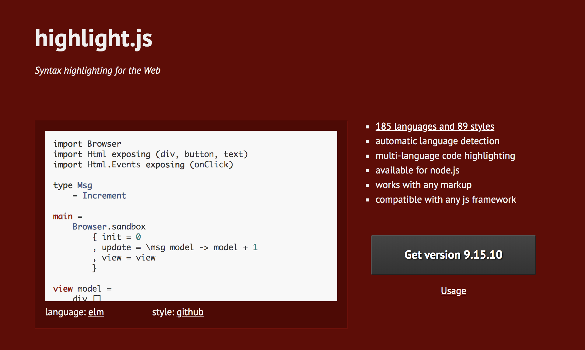
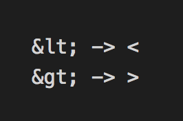

希望能在頁面上直接呈現 coding 的樣式，上網做了一下功課發現 Highlight.js 這套工具，它所呈現的效果就像平常我們在 coding 一樣。
ps : 他的樣式選擇有 defalut, zenburn, agate, androidstudio, dracula, rainbow, atom-one-dark, solarized-dark, github ...
<link href="//cdnjs.cloudflare.com/ajax/libs/highlight.js/9.15.10/styles/{{ 樣式選擇 }}.min.css" rel="stylesheet">
<script src="//cdnjs.cloudflare.com/ajax/libs/highlight.js/9.15.10/highlight.min.js"></script><script>hljs.initHighlightingOnLoad();</script> <pre><code> ``` 程式碼 ``` </code></pre><pre><code class="javascript"> ``` 程式碼 ``` </code></pre>
test = {
name : function () {
return 'hello';
},
age : function () {
return 13;
}
}
顯示不出來的可以用已定義好的特殊符號取代試試看
